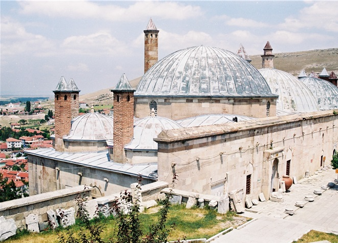

SEYİTGAZİ
Seyitgazi (Antik Çağda: Nakoleia), Eskişehir'in 43 kilometre güneyinde yer alan küçük bir ilçesidir.
İsmini, Arapların İslamiyeti Anadolu'ya yaymak üzere Bizans İmparatorluğu'na karşı verdiği
mücadelelerin birinde şehit düşen Battal Gazi'den alır.
Ayrıca günümüzde Alevi inancındaki Anadolu Müslüman'lığının da önemli uğrak yerlerindendir.
Tarihçesi
Seyitgazi'ye ilk yerleşim M.Ö. 3000 - 3500 tarihleri arasındadır.
Tarihteki esas belirgin yeri M.Ö. 800-600 yıllarında başlar.
Seyitgazi'nin Bizans İmparatorluğundan alınmasından sonra 70-80 hanelik
Türkmen halkı yerleştirilmiş ve adına da Türkmen Köyü denmiştir.
Seyitgazi ismini de Seyyid Battal Gazi Külliyesi yapıldıktan sonra almıştır.
Friglerden başlayarak canlı bir merkez olan Seyitgazi'nin nüfusu 15-20 bin gibi büyük sayılara ulaşmıştır.
1531'de Kanuni tarafından gönderilen bir fermanla Karacapınar, Hatıplar, Belenk,
Kalfal, Yenice ve Özbek adını taşıyan altı mahallesi olmuştur. Bugün Derebenek,
İkiçeşme, Hacıyunus ve Aşagısöğüt mahalleleri bulunan Seyitgazi'nin ayrıca bunlara
bağlı İlme ve Soğulcak isimli yerleşim birimleri de vardır.

Sivrihisar İlçesi Hakkında Bilgi Almak İçin TIKLAYINIZ.